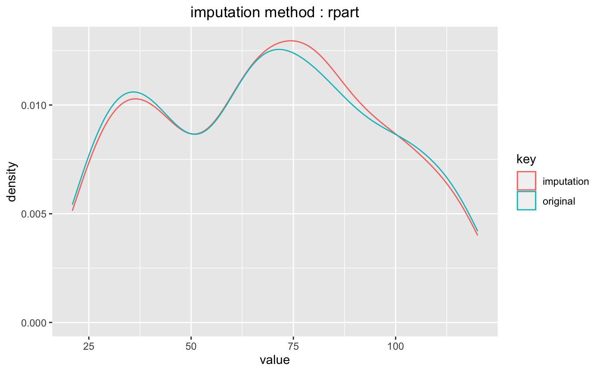
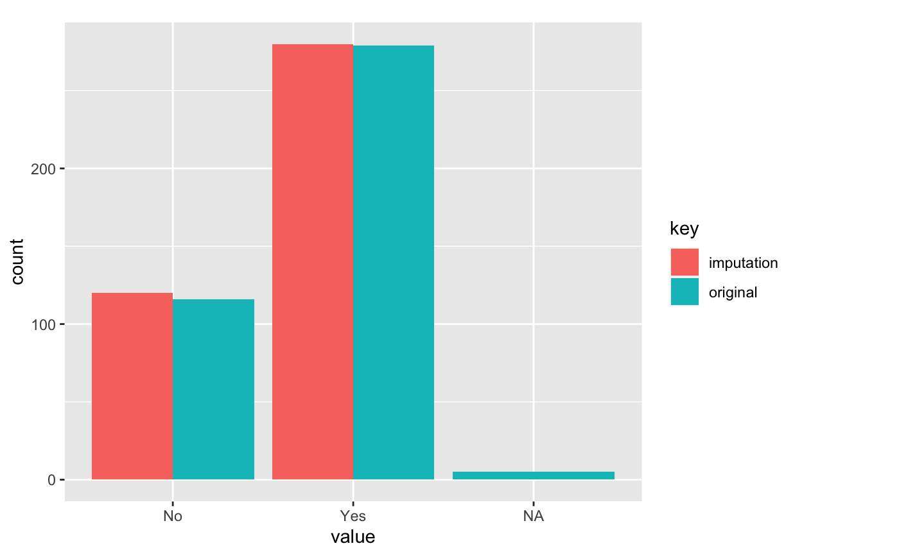

Missing values are imputed with some representative values and statistical methods.
imputate_na(.data, xvar, yvar, method, seed, print_flag, no_attrs)
| .data | a data.frame or a |
|---|---|
| xvar | variable name to replace missing value. |
| yvar | target variable. |
| method | method of missing values imputation. |
| seed | integer. the random seed used in mice. only used "mice" method. |
| print_flag | logical. If TRUE, mice will print running log on console. Use print_flag=FALSE for silent computation. Used only when method is "mice". |
| no_attrs | logical. If TRUE, return numerical variable or categorical variable. else If FALSE, imputation class. |
An object of imputation class. or numerical variable or categorical variable. if no_attrs is FALSE then return imputation class, else no_attrs is TRUE then return numerical vector or factor. Attributes of imputation class is as follows.
var_type : the data type of predictor to replace missing value.
method : method of missing value imputation.
predictor is numerical variable
"mean" : arithmetic mean
"median" : median
"mode" : mode
"knn" : K-nearest neighbors
"rpart" : Recursive Partitioning and Regression Trees
"mice" : Multivariate Imputation by Chained Equations
predictor is categorical variable
"mode" : mode
"rpart" : Recursive Partitioning and Regression Trees
"mice" : Multivariate Imputation by Chained Equations
na_pos : position of missing value in predictor.
seed : the random seed used in mice. only used "mice" method.
type : "missing values". type of imputation.
message : a message tells you if the result was successful.
success : Whether the imputation was successful.
imputate_na () creates an imputation class. The `imputation` class includes missing value position, imputed value, and method of missing value imputation, etc. The `imputation` class compares the imputed value with the original value to help determine whether the imputed value is used in the analysis.
See vignette("transformation") for an introduction to these concepts.
# \donttest{ # Generate data for the example carseats <- ISLR::Carseats carseats[sample(seq(NROW(carseats)), 20), "Income"] <- NA carseats[sample(seq(NROW(carseats)), 5), "Urban"] <- NA # Replace the missing value of the Income variable with median imputate_na(carseats, Income, method = "median")#> [1] 73 48 35 100 69 113 105 81 110 113 78 94 35 28 117 95 69 74 110 76 90 #> [22] 29 46 31 119 32 115 118 74 99 94 58 32 38 54 84 76 41 73 60 98 53 #> [43] 69 42 79 63 90 98 52 93 69 90 40 64 103 81 82 91 93 71 102 32 45 #> [64] 88 67 26 92 61 69 59 81 51 45 90 68 111 87 71 48 67 100 69 83 36 #> [85] 25 103 84 67 42 66 22 46 113 30 97 25 42 82 77 47 69 93 22 91 96 #> [106] 100 33 107 79 65 62 118 99 29 87 35 75 53 88 94 105 89 100 103 69 78 #> [127] 68 48 100 120 84 69 87 98 31 94 75 42 103 62 69 42 84 88 68 63 83 #> [148] 54 119 120 69 58 78 36 69 72 34 58 90 60 28 21 74 64 64 58 67 73 #> [169] 89 41 39 106 102 91 24 89 107 72 71 25 112 83 60 74 33 100 51 32 37 #> [190] 117 37 42 26 70 98 69 28 61 80 88 92 83 78 82 80 22 67 105 54 21 #> [211] 41 118 69 84 115 83 33 44 61 79 120 44 119 45 82 25 33 64 73 104 60 #> [232] 69 80 76 62 69 34 28 69 105 80 63 46 25 30 43 56 114 52 67 105 111 #> [253] 69 24 104 81 40 62 38 36 117 42 77 26 29 35 93 82 57 69 26 56 33 #> [274] 106 93 119 69 48 113 57 86 69 96 110 69 26 69 44 40 77 111 70 66 84 #> [295] 76 35 44 83 63 40 78 93 77 52 69 69 32 92 80 111 65 68 117 81 33 #> [316] 21 36 30 72 45 70 39 50 105 65 69 30 38 66 54 59 63 33 60 117 70 #> [337] 35 38 24 69 29 120 102 42 80 68 107 39 102 27 101 115 103 67 31 69 109 #> [358] 73 96 62 86 25 69 75 21 30 56 106 22 100 41 81 50 71 47 46 60 61 #> [379] 88 111 64 65 28 117 37 73 69 73 89 42 75 63 42 51 58 108 23 26 79 #> [400] 37 #> attr(,"var_type") #> [1] "numerical" #> attr(,"method") #> [1] "median" #> attr(,"na_pos") #> [1] 5 17 51 69 82 125 141 151 196 236 239 253 285 287 305 306 340 356 363 387 #> attr(,"type") #> [1] "missing values" #> attr(,"message") #> [1] "complete imputation" #> attr(,"success") #> [1] TRUE #> attr(,"class") #> [1] "imputation" "numeric"# Replace the missing value of the Income variable with rpart # The target variable is US. imputate_na(carseats, Income, US, method = "rpart")#> [1] 73.00000 48.00000 35.00000 100.00000 52.83333 113.00000 105.00000 81.00000 #> [9] 110.00000 113.00000 78.00000 94.00000 35.00000 28.00000 117.00000 95.00000 #> [17] 80.22222 74.00000 110.00000 76.00000 90.00000 29.00000 46.00000 31.00000 #> [25] 119.00000 32.00000 115.00000 118.00000 74.00000 99.00000 94.00000 58.00000 #> [33] 32.00000 38.00000 54.00000 84.00000 76.00000 41.00000 73.00000 60.00000 #> [41] 98.00000 53.00000 69.00000 42.00000 79.00000 63.00000 90.00000 98.00000 #> [49] 52.00000 93.00000 80.52174 90.00000 40.00000 64.00000 103.00000 81.00000 #> [57] 82.00000 91.00000 93.00000 71.00000 102.00000 32.00000 45.00000 88.00000 #> [65] 67.00000 26.00000 92.00000 61.00000 62.13636 59.00000 81.00000 51.00000 #> [73] 45.00000 90.00000 68.00000 111.00000 87.00000 71.00000 48.00000 67.00000 #> [81] 100.00000 80.22222 83.00000 36.00000 25.00000 103.00000 84.00000 67.00000 #> [89] 42.00000 66.00000 22.00000 46.00000 113.00000 30.00000 97.00000 25.00000 #> [97] 42.00000 82.00000 77.00000 47.00000 69.00000 93.00000 22.00000 91.00000 #> [105] 96.00000 100.00000 33.00000 107.00000 79.00000 65.00000 62.00000 118.00000 #> [113] 99.00000 29.00000 87.00000 35.00000 75.00000 53.00000 88.00000 94.00000 #> [121] 105.00000 89.00000 100.00000 103.00000 80.22222 78.00000 68.00000 48.00000 #> [129] 100.00000 120.00000 84.00000 69.00000 87.00000 98.00000 31.00000 94.00000 #> [137] 75.00000 42.00000 103.00000 62.00000 44.76923 42.00000 84.00000 88.00000 #> [145] 68.00000 63.00000 83.00000 54.00000 119.00000 120.00000 75.00000 58.00000 #> [153] 78.00000 36.00000 69.00000 72.00000 34.00000 58.00000 90.00000 60.00000 #> [161] 28.00000 21.00000 74.00000 64.00000 64.00000 58.00000 67.00000 73.00000 #> [169] 89.00000 41.00000 39.00000 106.00000 102.00000 91.00000 24.00000 89.00000 #> [177] 107.00000 72.00000 71.00000 25.00000 112.00000 83.00000 60.00000 74.00000 #> [185] 33.00000 100.00000 51.00000 32.00000 37.00000 117.00000 37.00000 42.00000 #> [193] 26.00000 70.00000 98.00000 80.52174 28.00000 61.00000 80.00000 88.00000 #> [201] 92.00000 83.00000 78.00000 82.00000 80.00000 22.00000 67.00000 105.00000 #> [209] 54.00000 21.00000 41.00000 118.00000 69.00000 84.00000 115.00000 83.00000 #> [217] 33.00000 44.00000 61.00000 79.00000 120.00000 44.00000 119.00000 45.00000 #> [225] 82.00000 25.00000 33.00000 64.00000 73.00000 104.00000 60.00000 69.00000 #> [233] 80.00000 76.00000 62.00000 57.55556 34.00000 28.00000 94.54545 105.00000 #> [241] 80.00000 63.00000 46.00000 25.00000 30.00000 43.00000 56.00000 114.00000 #> [249] 52.00000 67.00000 105.00000 111.00000 80.22222 24.00000 104.00000 81.00000 #> [257] 40.00000 62.00000 38.00000 36.00000 117.00000 42.00000 77.00000 26.00000 #> [265] 29.00000 35.00000 93.00000 82.00000 57.00000 69.00000 26.00000 56.00000 #> [273] 33.00000 106.00000 93.00000 119.00000 69.00000 48.00000 113.00000 57.00000 #> [281] 86.00000 69.00000 96.00000 110.00000 82.73684 26.00000 60.41667 44.00000 #> [289] 40.00000 77.00000 111.00000 70.00000 66.00000 84.00000 76.00000 35.00000 #> [297] 44.00000 83.00000 63.00000 40.00000 78.00000 93.00000 77.00000 52.00000 #> [305] 94.54545 94.54545 32.00000 92.00000 80.00000 111.00000 65.00000 68.00000 #> [313] 117.00000 81.00000 33.00000 21.00000 36.00000 30.00000 72.00000 45.00000 #> [321] 70.00000 39.00000 50.00000 105.00000 65.00000 69.00000 30.00000 38.00000 #> [329] 66.00000 54.00000 59.00000 63.00000 33.00000 60.00000 117.00000 70.00000 #> [337] 35.00000 38.00000 24.00000 75.00000 29.00000 120.00000 102.00000 42.00000 #> [345] 80.00000 68.00000 107.00000 39.00000 102.00000 27.00000 101.00000 115.00000 #> [353] 103.00000 67.00000 31.00000 94.54545 109.00000 73.00000 96.00000 62.00000 #> [361] 86.00000 25.00000 80.52174 75.00000 21.00000 30.00000 56.00000 106.00000 #> [369] 22.00000 100.00000 41.00000 81.00000 50.00000 71.00000 47.00000 46.00000 #> [377] 60.00000 61.00000 88.00000 111.00000 64.00000 65.00000 28.00000 117.00000 #> [385] 37.00000 73.00000 44.76923 73.00000 89.00000 42.00000 75.00000 63.00000 #> [393] 42.00000 51.00000 58.00000 108.00000 23.00000 26.00000 79.00000 37.00000 #> attr(,"var_type") #> [1] "numerical" #> attr(,"method") #> [1] "rpart" #> attr(,"na_pos") #> [1] 5 17 51 69 82 125 141 151 196 236 239 253 285 287 305 306 340 356 363 387 #> attr(,"type") #> [1] "missing values" #> attr(,"message") #> [1] "complete imputation" #> attr(,"success") #> [1] TRUE #> attr(,"class") #> [1] "imputation" "numeric"# Replace the missing value of the Urban variable with mode imputate_na(carseats, Urban, method = "mode")#> [1] Yes Yes Yes Yes Yes No Yes Yes No No No Yes Yes Yes Yes No Yes Yes No Yes Yes #> [22] No Yes Yes Yes No No Yes Yes Yes Yes Yes No Yes Yes No No Yes Yes No No Yes #> [43] Yes Yes Yes Yes No Yes Yes Yes Yes Yes Yes Yes No Yes Yes Yes Yes Yes Yes No Yes #> [64] Yes No No Yes Yes Yes Yes Yes No Yes No No No Yes No Yes Yes Yes Yes Yes Yes #> [85] No No Yes No Yes No No Yes Yes Yes Yes Yes No Yes No No No Yes No Yes Yes #> [106] Yes No Yes Yes No Yes Yes Yes Yes Yes Yes No Yes Yes Yes Yes Yes Yes No Yes No #> [127] Yes Yes Yes No Yes Yes Yes Yes Yes No No Yes Yes No Yes Yes Yes Yes No Yes Yes #> [148] No No Yes No No No No No Yes Yes No No No No No Yes No No Yes Yes Yes #> [169] Yes Yes Yes Yes Yes Yes No Yes No Yes No Yes Yes Yes Yes Yes No Yes No Yes Yes #> [190] No No Yes No Yes Yes Yes Yes Yes Yes Yes No Yes No Yes Yes Yes Yes No Yes No #> [211] No Yes Yes Yes Yes Yes Yes No Yes Yes Yes Yes Yes Yes No Yes Yes Yes No No No #> [232] No Yes No No Yes Yes Yes Yes Yes Yes Yes No Yes Yes No Yes Yes Yes Yes Yes Yes #> [253] Yes No Yes Yes Yes Yes No No Yes Yes Yes Yes Yes Yes No No Yes Yes Yes Yes Yes #> [274] Yes Yes Yes Yes Yes No Yes Yes No Yes No No Yes No Yes No Yes No Yes Yes Yes #> [295] Yes No Yes Yes Yes No Yes Yes Yes Yes Yes Yes Yes Yes Yes Yes Yes Yes Yes Yes Yes #> [316] Yes Yes No No No Yes Yes Yes Yes Yes Yes Yes Yes Yes Yes No Yes Yes Yes Yes Yes #> [337] Yes Yes Yes Yes Yes No No Yes No Yes No No Yes No No No Yes No Yes Yes Yes #> [358] Yes Yes Yes No No Yes Yes Yes No No Yes No Yes Yes Yes No Yes Yes Yes Yes No #> [379] Yes Yes Yes Yes Yes Yes Yes Yes Yes No Yes Yes Yes Yes Yes No Yes Yes No Yes Yes #> [400] Yes #> attr(,"var_type") #> [1] categorical #> attr(,"method") #> [1] mode #> attr(,"na_pos") #> [1] 8 30 43 96 195 #> attr(,"type") #> [1] missing values #> attr(,"message") #> [1] complete imputation #> attr(,"success") #> [1] TRUE #> Levels: No Yes# Replace the missing value of the Urban variable with mice # The target variable is US. imputate_na(carseats, Urban, US, method = "mice")#> #> iter imp variable #> 1 1 Income Urban #> 1 2 Income Urban #> 1 3 Income Urban #> 1 4 Income Urban #> 1 5 Income Urban #> 2 1 Income Urban #> 2 2 Income Urban #> 2 3 Income Urban #> 2 4 Income Urban #> 2 5 Income Urban #> 3 1 Income Urban #> 3 2 Income Urban #> 3 3 Income Urban #> 3 4 Income Urban #> 3 5 Income Urban #> 4 1 Income Urban #> 4 2 Income Urban #> 4 3 Income Urban #> 4 4 Income Urban #> 4 5 Income Urban #> 5 1 Income Urban #> 5 2 Income Urban #> 5 3 Income Urban #> 5 4 Income Urban #> 5 5 Income Urban#> [1] Yes Yes Yes Yes Yes No Yes No No No No Yes Yes Yes Yes No Yes Yes No Yes Yes #> [22] No Yes Yes Yes No No Yes Yes Yes Yes Yes No Yes Yes No No Yes Yes No No Yes #> [43] No Yes Yes Yes No Yes Yes Yes Yes Yes Yes Yes No Yes Yes Yes Yes Yes Yes No Yes #> [64] Yes No No Yes Yes Yes Yes Yes No Yes No No No Yes No Yes Yes Yes Yes Yes Yes #> [85] No No Yes No Yes No No Yes Yes Yes Yes Yes No Yes No No No Yes No Yes Yes #> [106] Yes No Yes Yes No Yes Yes Yes Yes Yes Yes No Yes Yes Yes Yes Yes Yes No Yes No #> [127] Yes Yes Yes No Yes Yes Yes Yes Yes No No Yes Yes No Yes Yes Yes Yes No Yes Yes #> [148] No No Yes No No No No No Yes Yes No No No No No Yes No No Yes Yes Yes #> [169] Yes Yes Yes Yes Yes Yes No Yes No Yes No Yes Yes Yes Yes Yes No Yes No Yes Yes #> [190] No No Yes No Yes No Yes Yes Yes Yes Yes No Yes No Yes Yes Yes Yes No Yes No #> [211] No Yes Yes Yes Yes Yes Yes No Yes Yes Yes Yes Yes Yes No Yes Yes Yes No No No #> [232] No Yes No No Yes Yes Yes Yes Yes Yes Yes No Yes Yes No Yes Yes Yes Yes Yes Yes #> [253] Yes No Yes Yes Yes Yes No No Yes Yes Yes Yes Yes Yes No No Yes Yes Yes Yes Yes #> [274] Yes Yes Yes Yes Yes No Yes Yes No Yes No No Yes No Yes No Yes No Yes Yes Yes #> [295] Yes No Yes Yes Yes No Yes Yes Yes Yes Yes Yes Yes Yes Yes Yes Yes Yes Yes Yes Yes #> [316] Yes Yes No No No Yes Yes Yes Yes Yes Yes Yes Yes Yes Yes No Yes Yes Yes Yes Yes #> [337] Yes Yes Yes Yes Yes No No Yes No Yes No No Yes No No No Yes No Yes Yes Yes #> [358] Yes Yes Yes No No Yes Yes Yes No No Yes No Yes Yes Yes No Yes Yes Yes Yes No #> [379] Yes Yes Yes Yes Yes Yes Yes Yes Yes No Yes Yes Yes Yes Yes No Yes Yes No Yes Yes #> [400] Yes #> attr(,"var_type") #> [1] categorical #> attr(,"method") #> [1] mice #> attr(,"na_pos") #> [1] 8 30 43 96 195 #> attr(,"type") #> [1] missing values #> attr(,"message") #> [1] complete imputation #> attr(,"success") #> [1] TRUE #> Levels: No Yes## using dplyr ------------------------------------- library(dplyr) # The mean before and after the imputation of the Income variable carseats %>% mutate(Income_imp = imputate_na(carseats, Income, US, method = "knn", no_attrs = TRUE)) %>% group_by(US) %>% summarise(orig = mean(Income, na.rm = TRUE), imputation = mean(Income_imp))#>#> # A tibble: 2 x 3 #> US orig imputation #> <fct> <dbl> <dbl> #> 1 No 64.7 64.9 #> 2 Yes 70.8 70.7# If the variable of interest is a numerical variable income <- imputate_na(carseats, Income, US, method = "rpart") income#> [1] 73.00000 48.00000 35.00000 100.00000 52.83333 113.00000 105.00000 81.00000 #> [9] 110.00000 113.00000 78.00000 94.00000 35.00000 28.00000 117.00000 95.00000 #> [17] 80.22222 74.00000 110.00000 76.00000 90.00000 29.00000 46.00000 31.00000 #> [25] 119.00000 32.00000 115.00000 118.00000 74.00000 99.00000 94.00000 58.00000 #> [33] 32.00000 38.00000 54.00000 84.00000 76.00000 41.00000 73.00000 60.00000 #> [41] 98.00000 53.00000 69.00000 42.00000 79.00000 63.00000 90.00000 98.00000 #> [49] 52.00000 93.00000 80.52174 90.00000 40.00000 64.00000 103.00000 81.00000 #> [57] 82.00000 91.00000 93.00000 71.00000 102.00000 32.00000 45.00000 88.00000 #> [65] 67.00000 26.00000 92.00000 61.00000 62.13636 59.00000 81.00000 51.00000 #> [73] 45.00000 90.00000 68.00000 111.00000 87.00000 71.00000 48.00000 67.00000 #> [81] 100.00000 80.22222 83.00000 36.00000 25.00000 103.00000 84.00000 67.00000 #> [89] 42.00000 66.00000 22.00000 46.00000 113.00000 30.00000 97.00000 25.00000 #> [97] 42.00000 82.00000 77.00000 47.00000 69.00000 93.00000 22.00000 91.00000 #> [105] 96.00000 100.00000 33.00000 107.00000 79.00000 65.00000 62.00000 118.00000 #> [113] 99.00000 29.00000 87.00000 35.00000 75.00000 53.00000 88.00000 94.00000 #> [121] 105.00000 89.00000 100.00000 103.00000 80.22222 78.00000 68.00000 48.00000 #> [129] 100.00000 120.00000 84.00000 69.00000 87.00000 98.00000 31.00000 94.00000 #> [137] 75.00000 42.00000 103.00000 62.00000 44.76923 42.00000 84.00000 88.00000 #> [145] 68.00000 63.00000 83.00000 54.00000 119.00000 120.00000 75.00000 58.00000 #> [153] 78.00000 36.00000 69.00000 72.00000 34.00000 58.00000 90.00000 60.00000 #> [161] 28.00000 21.00000 74.00000 64.00000 64.00000 58.00000 67.00000 73.00000 #> [169] 89.00000 41.00000 39.00000 106.00000 102.00000 91.00000 24.00000 89.00000 #> [177] 107.00000 72.00000 71.00000 25.00000 112.00000 83.00000 60.00000 74.00000 #> [185] 33.00000 100.00000 51.00000 32.00000 37.00000 117.00000 37.00000 42.00000 #> [193] 26.00000 70.00000 98.00000 80.52174 28.00000 61.00000 80.00000 88.00000 #> [201] 92.00000 83.00000 78.00000 82.00000 80.00000 22.00000 67.00000 105.00000 #> [209] 54.00000 21.00000 41.00000 118.00000 69.00000 84.00000 115.00000 83.00000 #> [217] 33.00000 44.00000 61.00000 79.00000 120.00000 44.00000 119.00000 45.00000 #> [225] 82.00000 25.00000 33.00000 64.00000 73.00000 104.00000 60.00000 69.00000 #> [233] 80.00000 76.00000 62.00000 57.55556 34.00000 28.00000 94.54545 105.00000 #> [241] 80.00000 63.00000 46.00000 25.00000 30.00000 43.00000 56.00000 114.00000 #> [249] 52.00000 67.00000 105.00000 111.00000 80.22222 24.00000 104.00000 81.00000 #> [257] 40.00000 62.00000 38.00000 36.00000 117.00000 42.00000 77.00000 26.00000 #> [265] 29.00000 35.00000 93.00000 82.00000 57.00000 69.00000 26.00000 56.00000 #> [273] 33.00000 106.00000 93.00000 119.00000 69.00000 48.00000 113.00000 57.00000 #> [281] 86.00000 69.00000 96.00000 110.00000 82.73684 26.00000 60.41667 44.00000 #> [289] 40.00000 77.00000 111.00000 70.00000 66.00000 84.00000 76.00000 35.00000 #> [297] 44.00000 83.00000 63.00000 40.00000 78.00000 93.00000 77.00000 52.00000 #> [305] 94.54545 94.54545 32.00000 92.00000 80.00000 111.00000 65.00000 68.00000 #> [313] 117.00000 81.00000 33.00000 21.00000 36.00000 30.00000 72.00000 45.00000 #> [321] 70.00000 39.00000 50.00000 105.00000 65.00000 69.00000 30.00000 38.00000 #> [329] 66.00000 54.00000 59.00000 63.00000 33.00000 60.00000 117.00000 70.00000 #> [337] 35.00000 38.00000 24.00000 75.00000 29.00000 120.00000 102.00000 42.00000 #> [345] 80.00000 68.00000 107.00000 39.00000 102.00000 27.00000 101.00000 115.00000 #> [353] 103.00000 67.00000 31.00000 94.54545 109.00000 73.00000 96.00000 62.00000 #> [361] 86.00000 25.00000 80.52174 75.00000 21.00000 30.00000 56.00000 106.00000 #> [369] 22.00000 100.00000 41.00000 81.00000 50.00000 71.00000 47.00000 46.00000 #> [377] 60.00000 61.00000 88.00000 111.00000 64.00000 65.00000 28.00000 117.00000 #> [385] 37.00000 73.00000 44.76923 73.00000 89.00000 42.00000 75.00000 63.00000 #> [393] 42.00000 51.00000 58.00000 108.00000 23.00000 26.00000 79.00000 37.00000 #> attr(,"var_type") #> [1] "numerical" #> attr(,"method") #> [1] "rpart" #> attr(,"na_pos") #> [1] 5 17 51 69 82 125 141 151 196 236 239 253 285 287 305 306 340 356 363 387 #> attr(,"type") #> [1] "missing values" #> attr(,"message") #> [1] "complete imputation" #> attr(,"success") #> [1] TRUE #> attr(,"class") #> [1] "imputation" "numeric"summary(income)#> * Impute missing values based on Recursive Partitioning and Regression Trees #> - method : rpart #> #> * Information of Imputation (before vs after) #> Original Imputation #> n 380.0000000 400.00000000 #> na 20.0000000 0.00000000 #> mean 68.6447368 68.95213287 #> sd 27.8221377 27.36921279 #> se_mean 1.4272455 1.36846064 #> IQR 47.2500000 45.42307692 #> skewness 0.0443762 0.01662889 #> kurtosis -1.0687684 -1.03036348 #> p00 21.0000000 21.00000000 #> p01 21.7900000 21.99000000 #> p05 26.0000000 26.00000000 #> p10 30.0000000 31.00000000 #> p20 39.0000000 40.00000000 #> p25 42.7500000 44.57692308 #> p30 49.4000000 51.00000000 #> p40 62.0000000 62.08181818 #> p50 69.0000000 69.00000000 #> p60 77.0000000 78.00000000 #> p70 84.0000000 84.00000000 #> p75 90.0000000 90.00000000 #> p80 96.0000000 94.54545455 #> p90 107.0000000 106.00000000 #> p95 115.0000000 114.05000000 #> p99 119.2100000 119.01000000 #> p100 120.0000000 120.00000000plot(income)# If the variable of interest is a categorical variable urban <- imputate_na(carseats, Urban, US, method = "mice")#> #> iter imp variable #> 1 1 Income Urban #> 1 2 Income Urban #> 1 3 Income Urban #> 1 4 Income Urban #> 1 5 Income Urban #> 2 1 Income Urban #> 2 2 Income Urban #> 2 3 Income Urban #> 2 4 Income Urban #> 2 5 Income Urban #> 3 1 Income Urban #> 3 2 Income Urban #> 3 3 Income Urban #> 3 4 Income Urban #> 3 5 Income Urban #> 4 1 Income Urban #> 4 2 Income Urban #> 4 3 Income Urban #> 4 4 Income Urban #> 4 5 Income Urban #> 5 1 Income Urban #> 5 2 Income Urban #> 5 3 Income Urban #> 5 4 Income Urban #> 5 5 Income Urbanurban#> [1] Yes Yes Yes Yes Yes No Yes No No No No Yes Yes Yes Yes No Yes Yes No Yes Yes #> [22] No Yes Yes Yes No No Yes Yes Yes Yes Yes No Yes Yes No No Yes Yes No No Yes #> [43] Yes Yes Yes Yes No Yes Yes Yes Yes Yes Yes Yes No Yes Yes Yes Yes Yes Yes No Yes #> [64] Yes No No Yes Yes Yes Yes Yes No Yes No No No Yes No Yes Yes Yes Yes Yes Yes #> [85] No No Yes No Yes No No Yes Yes Yes Yes No No Yes No No No Yes No Yes Yes #> [106] Yes No Yes Yes No Yes Yes Yes Yes Yes Yes No Yes Yes Yes Yes Yes Yes No Yes No #> [127] Yes Yes Yes No Yes Yes Yes Yes Yes No No Yes Yes No Yes Yes Yes Yes No Yes Yes #> [148] No No Yes No No No No No Yes Yes No No No No No Yes No No Yes Yes Yes #> [169] Yes Yes Yes Yes Yes Yes No Yes No Yes No Yes Yes Yes Yes Yes No Yes No Yes Yes #> [190] No No Yes No Yes No Yes Yes Yes Yes Yes No Yes No Yes Yes Yes Yes No Yes No #> [211] No Yes Yes Yes Yes Yes Yes No Yes Yes Yes Yes Yes Yes No Yes Yes Yes No No No #> [232] No Yes No No Yes Yes Yes Yes Yes Yes Yes No Yes Yes No Yes Yes Yes Yes Yes Yes #> [253] Yes No Yes Yes Yes Yes No No Yes Yes Yes Yes Yes Yes No No Yes Yes Yes Yes Yes #> [274] Yes Yes Yes Yes Yes No Yes Yes No Yes No No Yes No Yes No Yes No Yes Yes Yes #> [295] Yes No Yes Yes Yes No Yes Yes Yes Yes Yes Yes Yes Yes Yes Yes Yes Yes Yes Yes Yes #> [316] Yes Yes No No No Yes Yes Yes Yes Yes Yes Yes Yes Yes Yes No Yes Yes Yes Yes Yes #> [337] Yes Yes Yes Yes Yes No No Yes No Yes No No Yes No No No Yes No Yes Yes Yes #> [358] Yes Yes Yes No No Yes Yes Yes No No Yes No Yes Yes Yes No Yes Yes Yes Yes No #> [379] Yes Yes Yes Yes Yes Yes Yes Yes Yes No Yes Yes Yes Yes Yes No Yes Yes No Yes Yes #> [400] Yes #> attr(,"var_type") #> [1] categorical #> attr(,"method") #> [1] mice #> attr(,"na_pos") #> [1] 8 30 43 96 195 #> attr(,"type") #> [1] missing values #> attr(,"message") #> [1] complete imputation #> attr(,"success") #> [1] TRUE #> Levels: No Yessummary(urban)#> * Information of Imputation (before vs after) #> original imputation original_percent imputation_percent #> No 118 121 29.50 30.25 #> Yes 277 279 69.25 69.75 #> <NA> 5 0 1.25 0.00plot(urban)# }